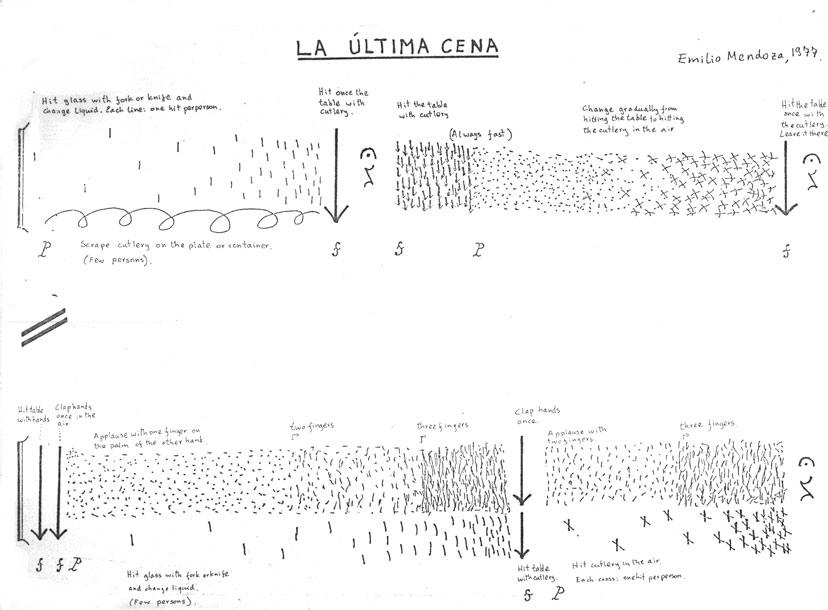

1977
/ Duración: varias horas
Referencias
Oltra García, Héctor. (2013). “Biografía, Catalogación de Obra y Aproximación al Lenguaje Musical del Compositor Valenciano D. Vicente Ramón Ramos Villanueva (1954 – 2012).”Tesis de Maestría. Universidad Politécnica de Valencia, Valencia, España. Director de tesis: Juan Cerveró. Pag. 41.
Oltra García, Héctor. (2019). LA EXPRESIÓN ESTRUCTURADA. Trayectoria vital y creativa del compositor valenciano Ramón Ramos Villanueva (1954-2012). Valencia: EdictOràlia Llibres i Publicacions, ISBN: 978‐84‐945465‐8‐7.
MENÚ
- Para un grupo de personas en un comedor o sala, cuarto o en sus casas, sentados a la mesa antes de empezar a comer. Puede también ejecutarse en un restaurante, comedor, pero en ningún caso hacer un concierto con esta música.
- Si se realiza en un comedor, las otras personas que estén comiendo pueden ser informadas que la pieza se va a tocar. También puede ser tocada sin ninguna introducción.
- Si los ejecutantes tienen mucha hambre, la pieza puede ser ejecutada después del plato principal, antes del postre.
- La pieza es todo el
ritual de la comida, desde que entran y se sientan
hasta que se van, la música que se va a tocar es la
excusa, un pretexto para hacer la reunión, comer,
beber y disfrutar la compañía de amigos y queridos, el
enfoque es el ritual y el goce social producido con
él.
- La Última Cena, que trata sobre el ritual en la ejecución de la música y su necesidad, se tocó y se grabó en la despedida de nuestros estudios, el día final en julio, 1981, después de cinco años en Düsseldorf, con las novias, amigos y profesores, con los dos Alfredos y los tres compositores españoles, además de otros amigos cercanos a nuestro mundo pequeño musical alemán. Yo pagué toda la cena y tragos en un restaurante griego y en el medio de la festividad tocamos la pieza. La cena entera fue grabada, desde los saludos secos y conversaciones de dineros y otros asuntos al principio, hasta la cantada de canciones venezolanas de despecho al final, todos completamente rascados (menos yo, que dirigía el asunto). Fue un momento muy especial porque desde ese día cada quien tomó su rumbo en la vida como compositor, hacia diferentes países, y se rompió para siempre un hermoso grupo de compositores, colegas, y amigos para siempre que hasta ese momento había existido.
Referencias
Oltra García, Héctor. (2013). “Biografía, Catalogación de Obra y Aproximación al Lenguaje Musical del Compositor Valenciano D. Vicente Ramón Ramos Villanueva (1954 – 2012).”Tesis de Maestría. Universidad Politécnica de Valencia, Valencia, España. Director de tesis: Juan Cerveró. Pag. 41.
Oltra García, Héctor. (2019). LA EXPRESIÓN ESTRUCTURADA. Trayectoria vital y creativa del compositor valenciano Ramón Ramos Villanueva (1954-2012). Valencia: EdictOràlia Llibres i Publicacions, ISBN: 978‐84‐945465‐8‐7.
MENÚ
- Cada persona tiene cerca un tenedor y cuchillo o cucharas, un vaso de vidrio o taza de cerámica (nada de plástico), algún plato de cerámica, sartén o contendor grande, una servilleta de papel.
- Debe haber también algún contenedor de líquido (con agua, cerveza o jugo, vino, etc.), y algunos saleros.
- La medida del tiempo es proporcional al gráfico.
- Vasos: cada vez que un vaso es golpeado, cambiar la cantidad de líquido llenándolo o vaciándolo después de cada golpe. Si el líquido es vino o cerveza, ¡beba un poquito cada vez!
- Servilletas: se deben frotar o amasar con ambas manos para producir un sonido. Si es una ocasión distinguida y las servilletas son de tela, entonces moverlas al aire rápidamente.
